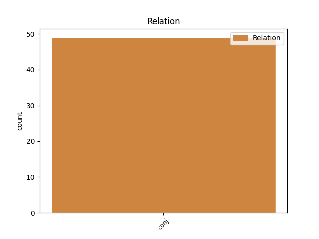
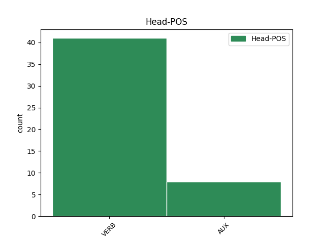
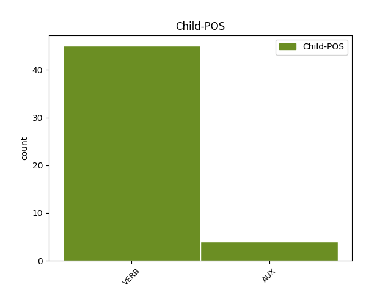

Distribution of features within this leaf



Agreement Rules sorted by frequency.
- When the dependent token is the conjunct(conj) of the head token,
1 Absoliučiai _ _ _ _ 0 _ _ _
2 nepriklausoma _ _ _ _ 0 _ _ _
3 šių _ _ _ _ 0 _ _ _
4 dienų _ _ _ _ 0 _ _ _
5 pasaulyje _ _ _ _ 0 _ _ _
6 yra _ _ _ _ 0 _ _ _
7 nebent _ _ _ _ 0 _ _ _
8 Šiaurės _ _ _ _ 0 _ _ _
9 Korėja _ _ _ _ 0 _ _ _
10 ; _ _ _ _ 0 _ _ _
11 visos _ _ _ _ 0 _ _ _
12 kitos _ _ _ _ 0 _ _ _
13 šalys _ _ _ _ 0 _ _ _
14 , _ _ _ _ 0 _ _ _
15 įskaitant _ _ _ _ 0 _ _ _
16 JAV _ _ _ _ 0 _ _ _
17 ir _ _ _ _ 0 _ _ _
18 Rusiją _ _ _ _ 0 _ _ _
19 , _ _ _ _ 0 _ _ _
20 daugiau _ _ _ _ 0 _ _ _
21 ar _ _ _ _ 0 _ _ _
22 mažiau _ _ _ _ 0 _ _ _
23 riboja _ _ _ _ 0 _ _ _
24 savo _ _ _ _ 0 _ _ _
25 veikimo _ _ _ _ 0 _ _ _
26 laisvę _ _ _ _ 0 _ _ _
27 , _ _ _ _ 0 _ _ _
28 atsižvelgdamos _ _ _ _ 0 _ _ _
29 į _ _ _ _ 0 _ _ _
30 kitų _ _ _ _ 0 _ _ _
31 interesus _ _ _ _ 0 _ _ _
32 ( _ _ _ _ 0 _ _ _
33 būna _ _ _ _ 0 _ _ _
34 , _ _ _ _ 0 _ _ _
35 kad _ _ _ _ 0 _ _ _
36 ir _ _ _ _ 0 _ _ _
37 neatsižvelgia atsižvelgti VERB VBC Mood=Ind|Number=Sing|Person=3|Polarity=Neg|Reflex=Yes|Tense=Pres|VerbForm=Fin|Voice=Act 0 _ _ _
38 , _ _ _ _ 0 _ _ _
39 bet _ _ _ _ 0 _ _ _
40 tada _ _ _ _ 0 _ _ _
41 yra būti AUX VBC Mood=Ind|Number=Sing|Person=3|Polarity=Pos|Reflex=No|Tense=Pres|VerbForm=Fin|Voice=Act 37 conj _ En=be
42 teisingai _ _ _ _ 0 _ _ _
43 baramos _ _ _ _ 0 _ _ _
44 ) _ _ _ _ 0 _ _ _
45 . _ _ _ _ 0 _ _ _
Disagree Examples:
1 Šiandien _ _ _ _ 0 _ _ _
2 daug _ _ _ _ 0 _ _ _
3 kas _ _ _ _ 0 _ _ _
4 įtartų _ _ _ _ 0 _ _ _
5 , _ _ _ _ 0 _ _ _
6 kad _ _ _ _ 0 _ _ _
7 Sokratas _ _ _ _ 0 _ _ _
8 yra būti AUX VBC Mood=Ind|Number=Sing|Person=3|Polarity=Pos|Reflex=No|Tense=Pres|VerbForm=Fin|Voice=Act 0 _ _ _
9 žydas _ _ _ _ 0 _ _ _
10 , _ _ _ _ 0 _ _ _
11 ar _ _ _ _ 0 _ _ _
12 bent _ _ _ _ 0 _ _ _
13 turėjo turėti VERB VBC Mood=Ind|Number=Sing|Person=3|Polarity=Pos|Reflex=No|Tense=Past|VerbForm=Fin|Voice=Act 8 conj _ En=have
14 žydę _ _ _ _ 0 _ _ _
15 motiną _ _ _ _ 0 _ _ _
16 , _ _ _ _ 0 _ _ _
17 o _ _ _ _ 0 _ _ _
18 jei _ _ _ _ 0 _ _ _
19 ne _ _ _ _ 0 _ _ _
20 , _ _ _ _ 0 _ _ _
21 tai _ _ _ _ 0 _ _ _
22 jo _ _ _ _ 0 _ _ _
23 žmona _ _ _ _ 0 _ _ _
24 Ksantipė _ _ _ _ 0 _ _ _
25 tikriausia _ _ _ _ 0 _ _ _
26 žydė _ _ _ _ 0 _ _ _
27 . _ _ _ _ 0 _ _ _
1 Atėniečiai _ _ _ _ 0 _ _ _
2 juo _ _ _ _ 0 _ _ _
3 , _ _ _ _ 0 _ _ _
4 tiesą _ _ _ _ 0 _ _ _
5 sakant _ _ _ _ 0 _ _ _
6 , _ _ _ _ 0 _ _ _
7 pernelyg _ _ _ _ 0 _ _ _
8 nesibaisėjo nesibaisėti VERB VBC Mood=Ind|Number=Plur|Person=3|Polarity=Neg|Reflex=Yes|Tense=Past|VerbForm=Fin|Voice=Act 0 _ _ _
9 , _ _ _ _ 0 _ _ _
10 bet _ _ _ _ 0 _ _ _
11 Aristofanas _ _ _ _ 0 _ _ _
12 jo _ _ _ _ 0 _ _ _
13 nemėgsta mėgti VERB VBC Mood=Ind|Number=Sing|Person=3|Polarity=Neg|Reflex=No|Tense=Pres|VerbForm=Fin|Voice=Act 8 conj _ En=like
14 – _ _ _ _ 0 _ _ _
15 vadina _ _ _ _ 0 _ _ _
16 „ _ _ _ _ 0 _ _ _
17 nešvankia _ _ _ _ 0 _ _ _
18 šlykštybe _ _ _ _ 0 _ _ _
19 “ _ _ _ _ 0 _ _ _
20 . _ _ _ _ 0 _ _ _
1 Tiesa _ _ _ _ 0 _ _ _
2 , _ _ _ _ 0 _ _ _
3 jis _ _ _ _ 0 _ _ _
4 dar _ _ _ _ 0 _ _ _
5 neapėmė apimti VERB VBC Mood=Ind|Number=Sing|Person=1|Polarity=Neg|Reflex=No|Tense=Past|VerbForm=Fin|Voice=Act 0 _ _ _
6 viso _ _ _ _ 0 _ _ _
7 gaublio _ _ _ _ 0 _ _ _
8 – _ _ _ _ 0 _ _ _
9 tarkime _ _ _ _ 0 _ _ _
10 , _ _ _ _ 0 _ _ _
11 neapėmė _ _ _ _ 0 _ _ _
12 islamo _ _ _ _ 0 _ _ _
13 kraštų _ _ _ _ 0 _ _ _
14 , _ _ _ _ 0 _ _ _
15 - _ _ _ _ 0 _ _ _
16 bet _ _ _ _ 0 _ _ _
17 netrukus _ _ _ _ 0 _ _ _
18 gal _ _ _ _ 0 _ _ _
19 apims apimti VERB VBC Mood=Ind|Number=Sing|Person=3|Polarity=Pos|Reflex=No|Tense=Fut|VerbForm=Fin|Voice=Act 5 conj _ En=include
20 ir _ _ _ _ 0 _ _ _
21 juos _ _ _ _ 0 _ _ _
22 . _ _ _ _ 0 _ _ _
1 Už _ _ _ _ 0 _ _ _
2 tą _ _ _ _ 0 _ _ _
3 pasaulį _ _ _ _ 0 _ _ _
4 buvo _ _ _ _ 0 _ _ _
5 brangiai _ _ _ _ 0 _ _ _
6 sumokėta sumokėti VERB VBNL Case=Nom|Definite=Ind|Gender=Fem|Number=Sing|Polarity=Pos|Reflex=No|Tense=Past|VerbForm=Part|Voice=Pass 0 _ _ _
7 ir _ _ _ _ 0 _ _ _
8 ligi _ _ _ _ 0 _ _ _
9 šiol _ _ _ _ 0 _ _ _
10 mokama mokėti VERB VBNH Definite=Ind|Gender=Neut|Polarity=Pos|Reflex=No|Tense=Pres|VerbForm=Part|Voice=Pass 6 conj _ En=pay|SpaceAfter=No
11 , _ _ _ _ 0 _ _ _
12 bet _ _ _ _ 0 _ _ _
13 man _ _ _ _ 0 _ _ _
14 jis _ _ _ _ 0 _ _ _
15 mielesnis _ _ _ _ 0 _ _ _
16 ar _ _ _ _ 0 _ _ _
17 bent _ _ _ _ 0 _ _ _
18 jau _ _ _ _ 0 _ _ _
19 įdomesnis _ _ _ _ 0 _ _ _
20 negu _ _ _ _ 0 _ _ _
21 Strepsiado _ _ _ _ 0 _ _ _
22 pasaulis _ _ _ _ 0 _ _ _
23 . _ _ _ _ 0 _ _ _
1 Beveik _ _ _ _ 0 _ _ _
2 visi _ _ _ _ 0 _ _ _
3 garsieji _ _ _ _ 0 _ _ _
4 mūsų _ _ _ _ 0 _ _ _
5 intelektualai _ _ _ _ 0 _ _ _
6 pasuko pasukti VERB VBC Mood=Ind|Number=Plur|Person=3|Polarity=Pos|Reflex=No|Tense=Past|VerbForm=Fin|Voice=Act 0 _ _ _
7 arba _ _ _ _ 0 _ _ _
8 pradeda pradėti VERB VBC Mood=Ind|Number=Plur|Person=3|Polarity=Pos|Reflex=No|Tense=Pres|VerbForm=Fin|Voice=Act 6 conj _ En=start
9 sukti _ _ _ _ 0 _ _ _
10 ne _ _ _ _ 0 _ _ _
11 Sokrato _ _ _ _ 0 _ _ _
12 , _ _ _ _ 0 _ _ _
13 o _ _ _ _ 0 _ _ _
14 Strepsiado _ _ _ _ 0 _ _ _
15 keliu _ _ _ _ 0 _ _ _
16 , _ _ _ _ 0 _ _ _
17 nors _ _ _ _ 0 _ _ _
18 jau _ _ _ _ 0 _ _ _
19 du _ _ _ _ 0 _ _ _
20 tūkstančius _ _ _ _ 0 _ _ _
21 penkis _ _ _ _ 0 _ _ _
22 šimtus _ _ _ _ 0 _ _ _
23 metų _ _ _ _ 0 _ _ _
24 – _ _ _ _ 0 _ _ _
25 ir _ _ _ _ 0 _ _ _
26 ne _ _ _ _ 0 _ _ _
27 be _ _ _ _ 0 _ _ _
28 pagrindo _ _ _ _ 0 _ _ _
29 – _ _ _ _ 0 _ _ _
30 manoma _ _ _ _ 0 _ _ _
31 , _ _ _ _ 0 _ _ _
32 kad _ _ _ _ 0 _ _ _
33 intelektualui _ _ _ _ 0 _ _ _
34 labiau _ _ _ _ 0 _ _ _
35 dera _ _ _ _ 0 _ _ _
36 Sokrato _ _ _ _ 0 _ _ _
37 kelias _ _ _ _ 0 _ _ _
38 . _ _ _ _ 0 _ _ _